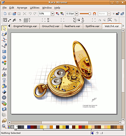

Xara Xtreme
Dieser Artikel wurde für die folgenden Ubuntu-Versionen getestet:
Ubuntu 14.04 Trusty Tahr
Zum Verständnis dieses Artikels sind folgende Seiten hilfreich:
Xara Xtreme  ist ein schnelles Vektorgrafikprogramm, das auf Linux portiert wurde. Es überzeugt vor allem durch seine Geschwindigkeit und Flexibilität auch bei komplexen Grafiken. Es gibt drei verschiedene Programmversionen von Xara Xtreme:
ist ein schnelles Vektorgrafikprogramm, das auf Linux portiert wurde. Es überzeugt vor allem durch seine Geschwindigkeit und Flexibilität auch bei komplexen Grafiken. Es gibt drei verschiedene Programmversionen von Xara Xtreme:
Xara Xtreme ist die kommerzielle Vollversion für das Betriebssystem Windows
Xara Xtreme LX ist die kostenfreie Open-Source-Version für Linux
Xara Xtreme XS ist eine abgespeckte Einsteigerversion, welche als Beilage bei einigen Computerzeitschriften erschienen ist

Dieser Beitrag befasst sich mit der Open-Source-Version "Xara Xtreme LX". Die Entwicklung des Programmes ist leider so gut wie eingestellt. Die letzte Version wurde Ende 2005 veröffentlicht, seitdem hat sich bei der Open-Source-Version für Linux nichts mehr getan. Die Programmsprache ist englisch, eine deutsche Lokalisierung ist nicht vorhanden.
Installation¶
Xara Xtreme LX ist in den offiziellen Paketquellen enthalten und kann so bequem installiert werden [1]. Lt. Homepage handelt es sich um eine Beta-Version, die instabil sein kann:
xaralx (multiverse)
xaralx-examples (multiverse, optional, Beispiele findet man dann unter /usr/share/doc/xaralx-examples/examples)
xaralx-svg (multiverse, optional, für IM-/Export von *.svg-Dateien)
 mit apturl
mit apturl
Paketliste zum Kopieren:
sudo apt-get install xaralx xaralx-examples xaralx-svg
sudo aptitude install xaralx xaralx-examples xaralx-svg
Anschließend kann das Programm mit dem Befehl xaralx gestartet werden [2] bzw. findet sich bei Ubuntu-Varianten mit einem Anwendungsmenü unter "Grafik -> Xara Xtreme".
Verwendung¶
Die vollständige Erklärung eines Vektorgraphikprogrammes würde den Umfang eines Wiki-Artikels deutlich sprengen. In der Xara Zone finden sich zahlreiche Tutorials, Anleitungen und Tipps zu Benutzung von Xara.
Links¶
Xara Zone
- Anleitungen, Tipps und weitere Dokumentationen
Programmvorstellung: Xara Xtreme
 - Pro-Linux 12/2006
- Pro-Linux 12/2006
- Erstellt mit Inyoka
-
 2004 – 2017 ubuntuusers.de • Einige Rechte vorbehalten
2004 – 2017 ubuntuusers.de • Einige Rechte vorbehalten
Lizenz • Kontakt • Datenschutz • Impressum • Serverstatus -
Serverhousing gespendet von